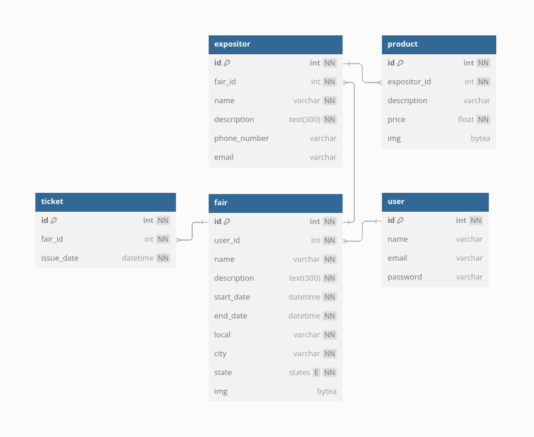

Projeto físico de banco de dados
O projeto de banco de dados relacional para suporte às operações do sistema YandêHUB foi executado utilizando o aplicativo web dbdiagram. Essa ferramenta permite a criação de diagramas de banco de dados relacional (ERDs, do inglês entity-relationship diagram) para modelagem lógica. O diagrama construído é apresentado abaixo. Detalhes adicionais podem ser visualizados na página do projeto no dbdocs.

Como especificado no documento de arquitetura do sistema, o sistema de gerenciamento de banco de dados utilizado em ambiente de produção será o PostgreSQL. Porém, em ambiente de desenvolvimento, o banco de dados SQLite inicializado pelo framework Django poderá ser utilizado. O dbdiagram facilita a inicialização do banco de dados no PostgreSQL, disponibilizando o código SQL para criação das colunas associadas a um banco de dados no SGDB, apresentado abaixo.
CREATE
CREATE TYPE "states" AS ENUM (
'AC',
'AL',
'AP',
'AM',
'BA',
'CE',
'DF',
'ES',
'GO',
'MA',
'MT',
'MS',
'MG',
'PA',
'PB',
'PE',
'PI',
'PR',
'RJ',
'RN',
'RO',
'RS',
'RR',
'SE',
'SC',
'SP',
'TO'
);
CREATE TABLE "user" (
"id" INT GENERATED BY DEFAULT AS IDENTITY UNIQUE PRIMARY KEY NOT NULL,
"name" varchar,
"email" varchar,
"password" varchar
);
CREATE TABLE "fair" (
"id" INT GENERATED BY DEFAULT AS IDENTITY UNIQUE PRIMARY KEY NOT NULL,
"user_id" int NOT NULL,
"name" varchar UNIQUE NOT NULL,
"description" text(300) NOT NULL,
"start_date" datetime NOT NULL,
"end_date" datetime NOT NULL,
"local" varchar NOT NULL,
"city" varchar NOT NULL,
"state" states NOT NULL,
"img" bytea
);
CREATE TABLE "expositor" (
"id" INT GENERATED BY DEFAULT AS IDENTITY UNIQUE PRIMARY KEY NOT NULL,
"fair_id" int NOT NULL,
"name" varchar NOT NULL,
"description" text(300) NOT NULL,
"phone_number" varchar,
"email" varchar
);
CREATE TABLE "product" (
"id" INT GENERATED BY DEFAULT AS IDENTITY UNIQUE PRIMARY KEY NOT NULL,
"expositor_id" int NOT NULL,
"description" varchar,
"price" float NOT NULL
);
CREATE TABLE "ticket" (
"id" INT GENERATED BY DEFAULT AS IDENTITY UNIQUE PRIMARY KEY NOT NULL,
"fair_id" int NOT NULL,
"issue_date" datetime NOT NULL
);
ALTER TABLE "fair" ADD FOREIGN KEY ("user_id") REFERENCES "user" ("id");
ALTER TABLE "expositor" ADD FOREIGN KEY ("fair_id") REFERENCES "fair" ("id");
ALTER TABLE "product" ADD FOREIGN KEY ("expositor_id") REFERENCES "expositor" ("id");
ALTER TABLE "ticket" ADD FOREIGN KEY ("fair_id") REFERENCES "fair" ("id");
Espera-se que a implantação do banco de dados seja realizada em uma máquina ou contâiner separada da aplicação principal, a fim de assegurar recursos de memória/processamento e prover maior segurança de dados e acesso. A instalação do servidor PostgreSQL seria realizada nesse nó, no qual seria criado o banco de dados para o software YandêHUB e o código acima seria utilizado para inicializar as tabelas necessários ao sistema.